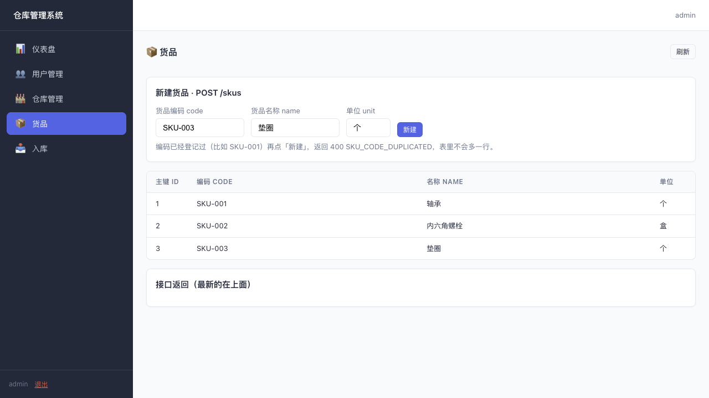
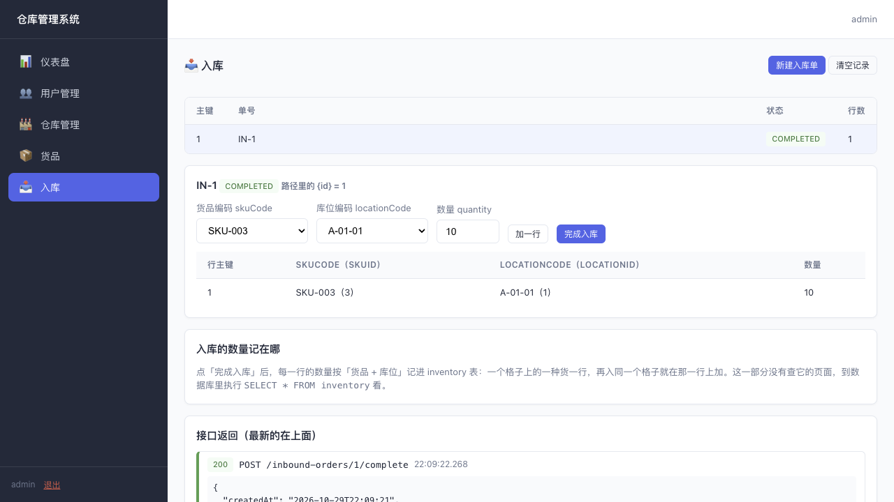
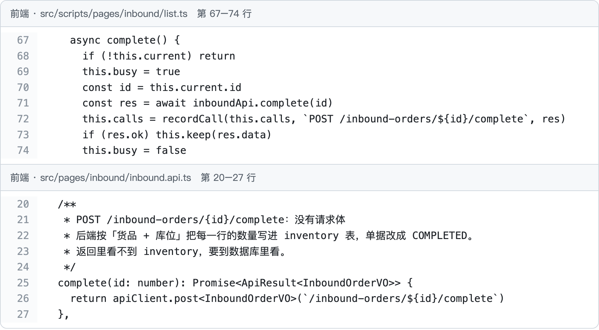
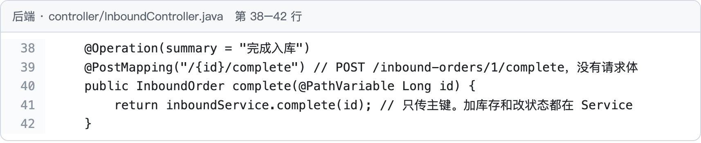
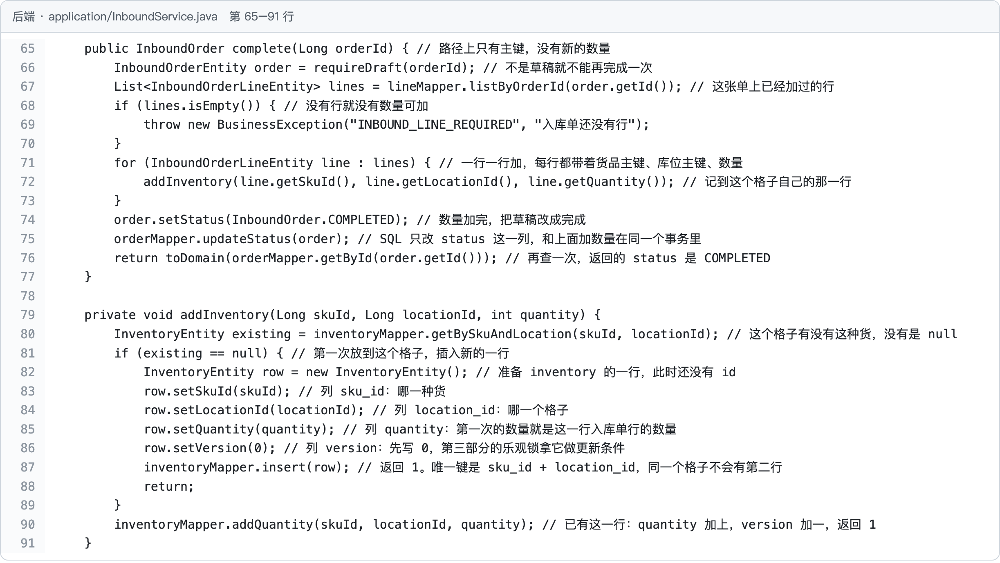
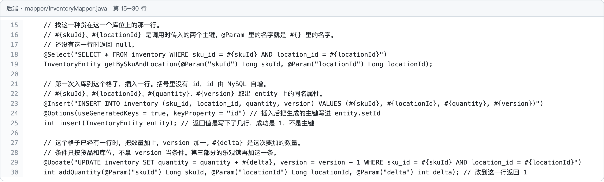
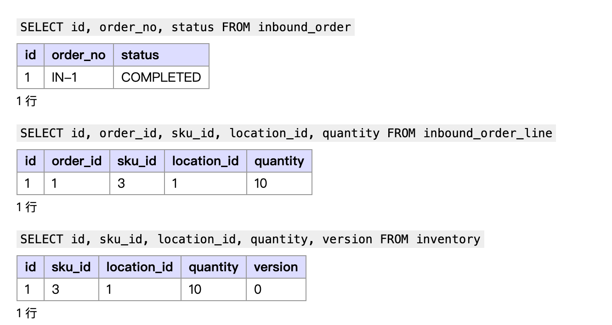

1. 先看页面
上一部分系统只知道仓库里有哪些格子。这一部分加两件事：货品（仓库里有哪些货）和入库（进了多少货、放进哪个格子）。左边菜单多了「货品」「入库」两页。


2. 用到的四张表
| 表 | 存什么 |
|---|---|
sku | 货品：编码、名称、单位。编码不重复 |
inbound_order | 入库单：单号、状态（DRAFT 草稿 / COMPLETED 完成） |
inbound_order_line | 入库单上的每一行：哪种货、哪个库位、多少个 |
inventory | 库存：每个库位上每种货有多少个，一个库位上的一种货一行 |
表由启动时的迁移脚本建好，脚本在 src/main/resources/db/migration，V7、V10、V11 是这一部分的。
3. 案例：把 10 个垫圈入库到 A-01-01
在入库页上点三下，发出三个请求：
| 页面上点 | 请求 | 数据库里多了什么 |
|---|---|---|
| 新建入库单 | POST /inbound-orders | inbound_order 一行 IN-1，状态 DRAFT |
| 加一行（SKU-003、A-01-01、10） | POST /inbound-orders/1/lines | inbound_order_line 一行 |
| 完成入库 | POST /inbound-orders/1/complete | inventory 一行：A-01-01 上 10 个垫圈；IN-1 变成 COMPLETED |
前两步只是记下单据，第三步才真正动库存。下面跟着「完成入库」这一个请求，从页面走到数据库。

complete()，第 71 行调 inboundApi.complete(id)；inbound.api.ts 第 26 行发出 POST /inbound-orders/1/complete，没有请求体。
InboundService.complete。
addInventory；第 74–75 行把单改成 COMPLETED。addInventory 先查这个库位上有没有这种货（第 80 行）：没有就插入新的一行（第 81–88 行），有就在原来那一行上加（第 90 行）。

inbound_order 里 IN-1 是 COMPLETED；inbound_order_line 记着 sku_id 3（垫圈）、location_id 1（A-01-01）、10；inventory 多了一行同样的货品、库位、数量。同一个库位再入一次垫圈，inventory 不会多一行，而是那一行的 quantity 加上去。
4. 剩下的接口自己看
下面几个接口走的是同一条路。照着第 3 节，从前端文件找到 Controller，再到 Service、Mapper，最后到表：
| 接口 | 做什么 | 前端 | 后端 |
|---|---|---|---|
POST /skus | 新建货品，编码重复返回 400 | pages/skus/skus.api.ts | SkuController → SkuService.create → SkuMapper |
GET /skus | 货品列表 | 同上 | SkuController → SkuService.list |
POST /inbound-orders | 新建入库单（草稿） | pages/inbound/inbound.api.ts | InboundController → InboundService.create |
POST /inbound-orders/{id}/lines | 加一行：把货品编码、库位编码换成主键再插入 | 同上 | InboundService.addLine → InboundOrderLineMapper |
5. 作业里写同类接口时
先写表，再按 Controller → Service → Mapper 的顺序写，和上面的案例一一对照：请求里的每个字段有没有走到 SQL；改库存和改单据状态是不是在同一个方法里一起完成。